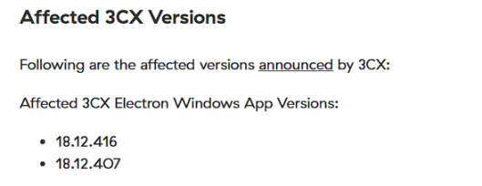
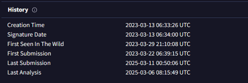
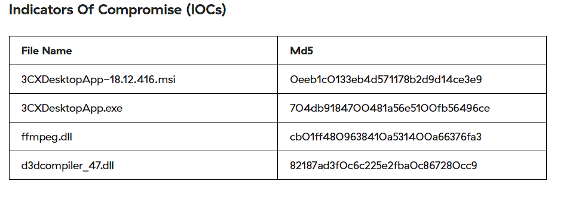
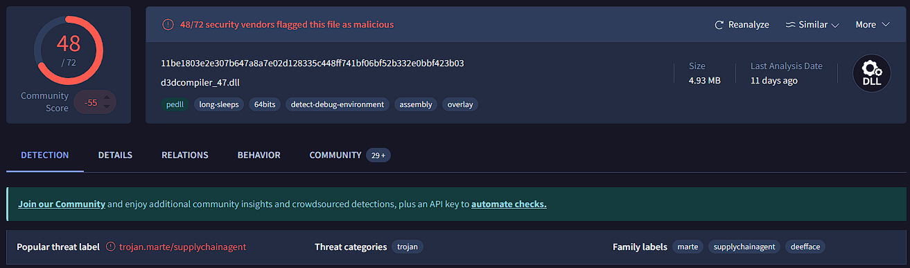
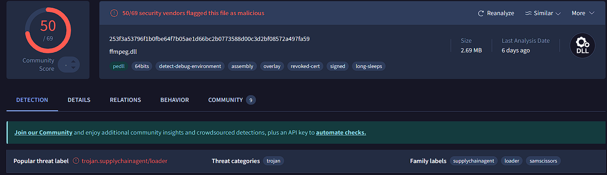
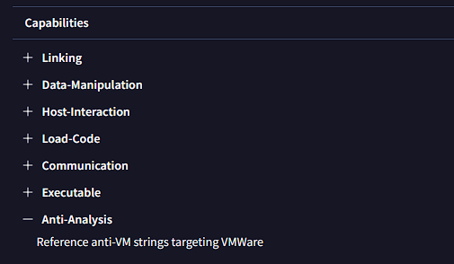
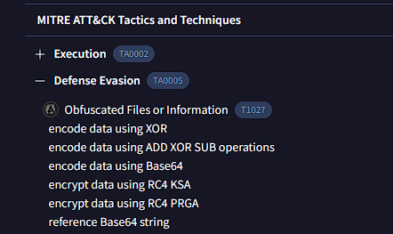

Scenario
A large multinational corporation heavily relies on the 3CX software for phone communication, making it a critical component of their business operations. After a recent update to the 3CX Desktop App, antivirus alerts flag sporadic instances of the software being wiped from some workstations while others remain unaffected. Dismissing this as a false positive, the IT team overlooks the alerts, only to notice degraded performance and strange network traffic to unknown servers. Employees report issues with the 3CX app, and the IT security team identifies unusual communication patterns linked to recent software updates. As the threat intelligence analyst, it's your responsibility to examine this possible supply chain attack. Your objectives are to uncover how the attackers compromised the 3CX app, identify the potential threat actor involved, and assess the overall extent of the incident.
Tools Used
VirusTotal
zscaler
Question 1: Understanding the scope of the attack and identifying which versions exhibit malicious behavior is crucial for making informed decisions if these compromised versions are present in the organization. How many versions of 3CX running on Windows have been flagged as malware?
In this lab I used several different sources to find infomation about this malious file. This blog list the affected version of both Windows and Mac as well as some other useful information that will be used later in this lab. Here is a link to the blog: 3CX Supply Chain Attack
Figure 1: zscaler affected versions
Answer: 2 Windows version were affected
Question 2: Determining the age of the malware can help assess the extent of the compromise and track the evolution of malware families and variants. What's the UTC creation time of the .msi malware?
The creation time of this malware is easily obtained by using virustotal. In the details tab you can find it under history.
Figure 2: virustotal history
Question 3: Executable files (.exe) are frequently used as primary or secondary malware payloads, while dynamic link libraries (.dll) often load malicious code or enhance malware functionality. Analyzing files deposited by the Microsoft Software Installer (.msi) is crucial for identifying malicious files and investigating their full potential. Which malicious DLLs were dropped by the .msi file?
Finding the other files created by the microsoft software installer (.msi) is important because we learn a lot about how the malware operates if we know this information. We can find the indicators of compromise on blog by zscaler.
Figure 3: zscaler IOC
Answer: ffmpeg.dll,d3dcompiler_47.dll
Question 4: Recognizing the persistence techniques used in this incident is essential for current mitigation strategies and future defense improvements. What is the MITRE Technique ID employed by the .msi files to load the malicious DLL?
If we do more research on the dlls and the information we gained from how the msi creates these other files, we can see that the MITRE technique used in hijacking.
Answer: T1574
Question 5: Recognizing the malware type (threat category) is essential to your investigation, as it can offer valuable insight into the possible malicious actions you'll be examining. What is the threat category of the two malicious DLLs?
You can find information on the threat catagory of the malicious dlls by getting the hashcode for each of the files. You can find this information several ways but I saw the information on zscaler so that's how I completed this section of the lab. Another way to find this information is to use the msiinfo command. By using msiinfo streams and extract you can extract the product.cab file, where you can search for the sha256sum.
 Figure : Target Info field
Answer: Trojan
Question 6: As a threat intelligence analyst conducting dynamic analysis, it's vital to understand how malware can evade detection in virtualized environments or analysis systems. This knowledge will help you effectively mitigate or address these evasive tactics. What is the MITRE ID for the virtualization/sandbox evasion techniques used by the two malicious DLLs?
In order to find this information I used a simple google search to find the MITRE ID for virtualization/sandbox evasion techniques.
Answer: T14097
Question 7: When conducting malware analysis and reverse engineering, understanding anti-analysis techniques is vital to avoid wasting time. Which hypervisor is targeted by the anti-analysis techniques in the ffmpeg.dll file?
I found this information on virustotal in the behavior tab. Under capabilties you can find the anti-analysis techniques
Figure 6: behavior tab on virustotal
Answer: VMWare
Question 8: Identifying the cryptographic method used in malware is crucial for understanding the techniques employed to bypass defense mechanisms and execute its functions fully. What encryption algorithm is used by the ffmpeg.dll file?
Similarly in the behavior tab of virustotal you can find the MITRE ATT&CK Tactics and Techniques. The answer is listed under the defense evasion tree.
Figure 7: behavior tab on virustotal
Answer: RC4
Question 9: As an analyst, you've recognized some TTPs involved in the incident, but identifying the APT group responsible will help you search for their usual TTPs and uncover other potential malicious activities. Which group is responsible for this attack?
I did research on 3CX to find out who did this and found the group called Lazarus. This is an organization based in North Korea. Here is more information